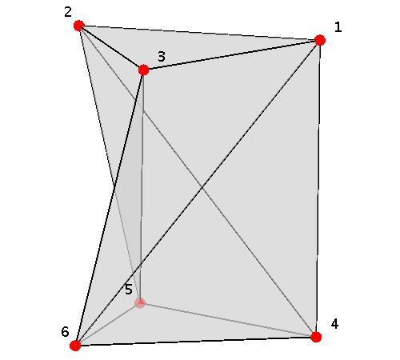
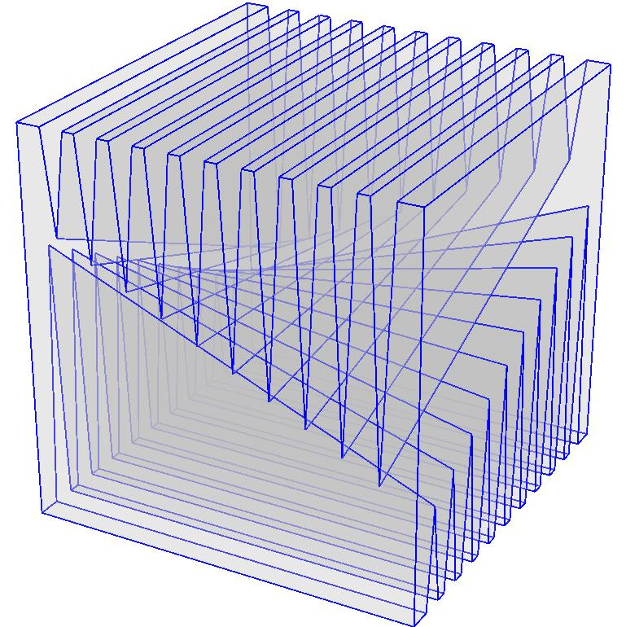
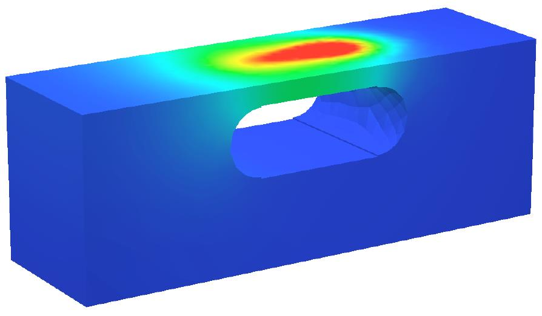
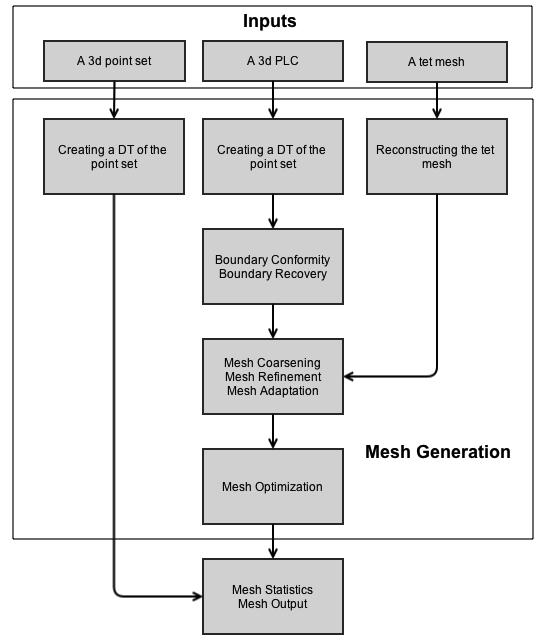
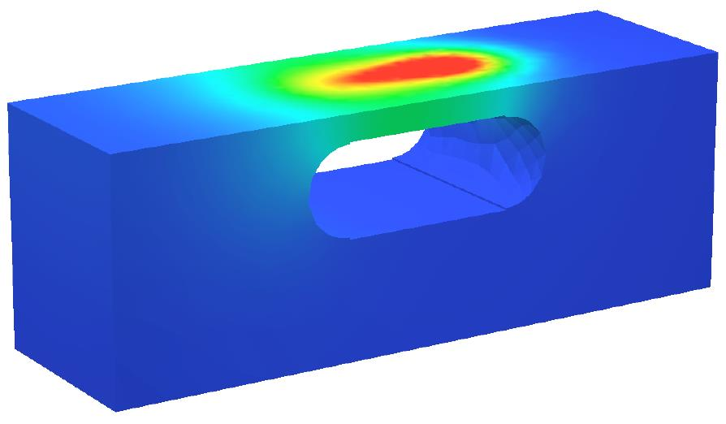
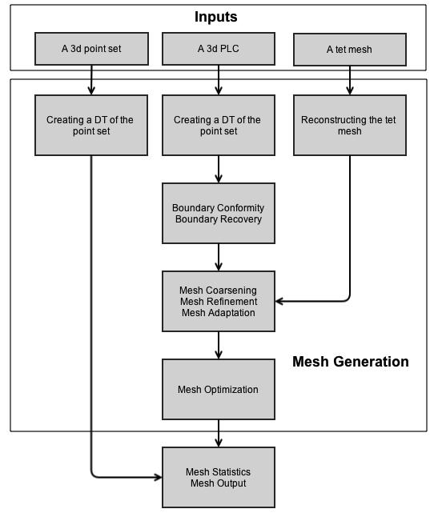

优质四面体网格和三维Delaunay三角剖分生成器
0. Delaunay triangulation has many pretty mathematical properties.
1. TetGen implements 2 algorithms: the Bowyer-Watson algorithm and the incremental flip algorithm. Both have the worst-case runtime O(n^2) and the expected running time O(nlogn).
2. TetGen takes Piecewise Linear Complexes(PLCs, have two properties) as the input(.poly and .smesh files). It focuses on: the representation of the geometry(the boundary) and the quality of the mesh.
3. -p to conform to the constrained Delaunay property and improve the mesh quality.
4. -y to preserve the surface mesh(doesn't subdivide it).
5. -c to keep the convex hull of the mesh if the input surface mesh doesn't enclose of 3d volume.
6. PLCs have a limitation: it doesn't take the curvature of the surfaces into account.
7. Steiner points are necessary for triangulating some 3d polyhedra(e.g. the schonhardt polyhedron(left) and the chazelle's polyhedron(right) shown below).
 8. There are three types of steiner tetrahedralizations: conforming Delaunay, constrained Delaunay, and constrained. The last one can preserve the input domain boundaries, thus it's useful in many engineering applications.
9. Mesh quality: radius-edge ratio=radius/shortest edge, at least 0.612. Dihedral angle between 0-180 is also measured by TetGen.
10. Mesh adaptation and mesh sizing functions can control the mesh density and thus can reduce the simulation error by refining areas that have big gradients. The function H: |X|->R maps each point to a number indicating the edge length at that point isotropically. The -a switch can exert a maximum volume bound on every tetrahedra of the mesh. H can be assigned initially with a .mtr file or by a background mesh with a value at each mesh node indicating the mesh size. Set the number to zero to let TetGen ignore the number at that point. An adaptation method is shown below.
 



11. The figure shown above is a detailed flowchart of the mesh generation process of TetGen. This(page 24) is very important!